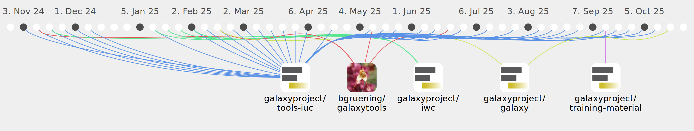

SaimMomin12

Commits all-time: 284
Commits last year: 159

(142)
- ea12b9f
- 35c02b7
- 7b89fa5
- b5d09b8
- 622555e
- 2fbf5bd
- 3af58a0
- a12e379
- 1dccf96
- 7645f10
- 6a05fde
- 447b3ec
- 4bc1c7a
- 06dda9e
- 9127dfb
- cb599a5
- e4b18c8
- 565d90e
- 2955f63
- f8e639d
- 9fb22fe
- 836f979
- a3bca79
- 0a99e04
- 28b1edb
- 574ac61
- 1d49ad3
- 299dd59
- 0114b1a
- 77fb30f
- a6b11b4
- f10bc88
- 1860823
- e529a14
- c7309b4
- 30842fa
- c532ea2
- b67c0e9
- 5fbf9a5
- c995ce5
- 2fd3d37
- 0f381ce
- 54172b8
- b912e99
- 7e6ff3f
- 249acac
- f83cea7
- f6d06ca
- 290e90d
- 7c0d91e
- 2d92350
- 83279dc
- e62bb36
- 76f8b08
- 6c0960a
- df08c30
- a886f85
- 8125649
- 4928f21
- 5081fed
- ed3c07c
- 76bfefa
- c5387cc
- bc96519
- a78ebd8
- e03085d
- 6cf5c05
- 6c66c0c
- bdf654a
- 99a5359
- 7f5c4c5
- f8cb796
- 3c7e688
- c43e4b5
- fa57548
- 0b22065
- 1009584
- 5cf420f
- 1116a91
- 0008df4
- 0e2659e
- 9d924fc
- 62bac3d
- 35c8358
- fb72624
- 3a1141f
- a0f2bad
- 0c93f97
- b2634d4
- 9c8e863
- 0393597
- 653f05b
- 5db2d18
- 4b14ff1
- cfb5e57
- c43ec89
- 9325ac0
- e219124
- 3d9fe3e
- 9f6c7ff
- 1471c67
- b693bb1
- 078ade4
- 6e4899e
- a8808d3
- 38c6b70
- 117feba
- d89c1ce
- 992fc98
- 4b648d0
- 197b756
- 9981466
- e3990b9
- 38a8594
- 7be799e
- 66dd855
- d5ec413
- 85a1412
- 87fc50a
- 5b6ca6c
- 68d21f2
- 4f91feb
- 66b393a
- 4095773
- 166ec7b
- 78b8043
- 63f4a55
- 17ea82e
- 474cb80
- 3f11509
- 310ca6a
- eb1dd55
- da79ad5
- af00a20
- 3636f30
- f692d72
- 2c2e250
- 289f628
- 2e3b360
- 5c640ed
- fd6bda0
- b231bd0
(12)
(4)
(1)